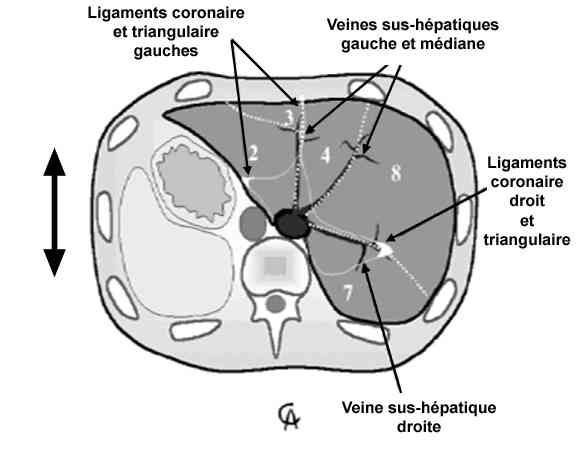
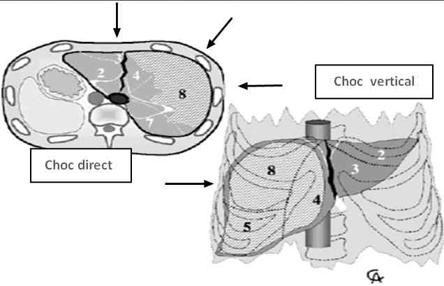
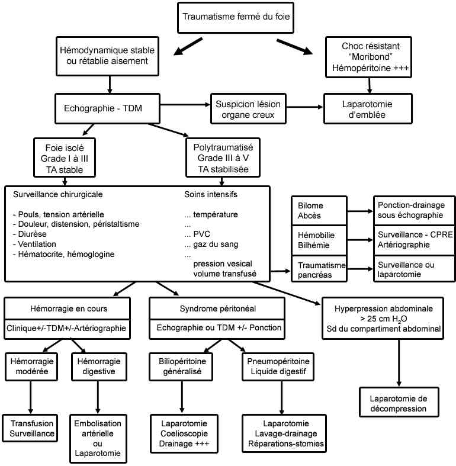
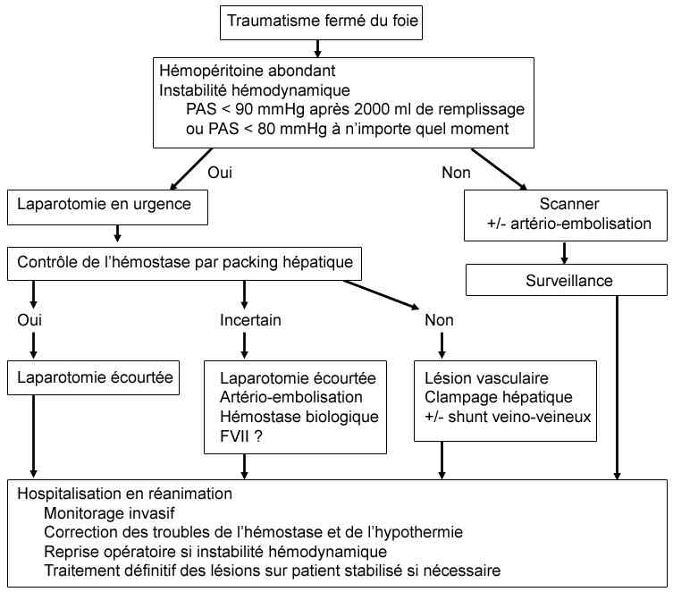

Bienvenue Sur Medical Education
Traumatisme hépatique
Spécialité : traumatologie /
Points importants
-
Le traumatisme hépatique est fréquent chez le polytraumatisé (20%)
-
Mortalité de 4 à 11% (50 à 80% dans les formes graves)
-
Le traitement conservateur est de plus en plus utilisé chez le patient avec hémodynamique stable (70%)
-
8 à 22% de mortalité
Présentation clinique / CIMU
SIGNES FONCTIONNELS
Présentation clinique / CIMU
SIGNES FONCTIONNELS
Généraux
- Signes de choc hémorragique (agitation, soif, pâleur, troubles de la conscience)
Spécifiques
- Douleur hypochondre droit
- Douleur irradiant épaule (irritation péritonéale)
CONTEXTE
Terrain
- Le plus souvent, homme jeune de 30-40 ans
Antécédents
- Psychiatriques (syndrome dépressif, tentative d'autolyse)
- Ethylisme chronique
- HTA, cardiopathie, hépatopathie
Traitement
- Anticoagulants
- Beta bloquants
- Antidépresseurs
- Anxiolytiques
Circonstances de survenue
- Accident de la voie publique
- Rixe avec traumatisme abdominal
- Défenestration
- Ecrasement
- Accident de sport
EXAMEN CLINIQUE
- Abdomen tendu, mate, augmenté de volume
- Défense de l'hypochondre droit
- Ecchymose du flanc droit
- Fracture de côtes
- Contusion pulmonaire en base droite
- Signes de choc, tachycardie, HoTA, bradycardie paradoxale
-
Recherche de lésions associées :
- neurologiques, thoracique, rachis, membres
EXAMENS PARACLINIQUES SIMPLES
- Hémoglobine capillaire (à répéter)
- Glycémie capillaire (recherche d'une cause de l'accident)
- ECG (recherche d'une lésion thoracique associée)
- BU (recherche d'une lésion associée de l'appareil urinaire)
CIMU
-
Tri 1 à 2 selon la gravité des lésions
Signes paracliniques
BIOLOGIQUE
-
NFS
-
TP, TCA
-
Groupe 1 et 2, Rhésus, RAI
-
Transaminases
-
Bilirubine
-
GDS (recherche d'une acidose)
IMAGERIE
En salle de déchoquage en systématique devant un polytraumatisé
- Radio de thorax de face (contusion pulmonaire, hémothorax, hémomédiastin, lésions de l'aorte)
- Bassin (fracture de bassin)
Si patient instable sur le plan hémodynamique
- Echographie abdominale à la recherche d'un épanchement péritonéal même minime (Sensibilité = 82 à 98%, Spécificité = 99,7%)
Si patient stable sur le plan hémodynamique
-
TDM abdominale avec temps vasculaire (ou Bodyscanner en fonction du traumatisme). Permet le diagnostic :
- hémopéritoine, hémorragie active
- hématome sous-capsulaire, lésions du parenchyme
- perforation digestive
- lésions associées
- gravité
- classification de Moore
Diagnostic différentiel
DANS LE CADRE DU TRAUMATISME ABDOMINAL
-
Traumatisme splénique
-
Traumatisme du bassin
-
Lésions mésentériques
EN CAS DE POLYTRAUMATISE AVEC CHOC HEMORRAGIQUE
-
Hémothorax
-
Lésions de l'aorte
-
Rupture splénique
-
Fracture du bassin
Traitement
REANIMATION
-
Remplissage : maintien d'une PAS : 80-90 mmHg
-
Transfusion (culots globulaires et PFC)
-
Lutte contre :
-
l'hypothermie
-
l'acidose
-
les troubles de la coagulation
LAPAROTOMIE
Traitement
REANIMATION
- Remplissage : maintien d'une PAS : 80-90 mmHg
- Transfusion (culots globulaires et PFC)
-
Lutte contre :
- l'hypothermie
- l'acidose
- les troubles de la coagulation
LAPAROTOMIE
Indications
- Instabilité hémodynamique
- Hémorragie active avec transfusion importante
- Nécessité d'amines
- Troubles de la coagulation
- Autres lésions d'organes creux +++
- Acidose
Principe
- Damage Control Surgery
-
Le but est une hémostase provisoire et rapide :
- packing
- clampage
- hépatectomie (< 5%)
- embolisation en complément de la chirurgie si saignement artériel actif
TRAITEMENT CONSERVATEUR
Indication
- Stabilité hémodynamique
- Hémopéritoine < 500 mL
- Absence de lésion d'organe creux
- Surveillance en réanimation
- Accès rapide à la TDM
-
Chirurgie des complications possible sans délai
Surveillance
CLINIQUE
-
Hémodynamique (FC, PA, diurèse/h)
-
Apparition d'un ictère
-
Température corporelle
-
Mesure de la pression intra-abdominale (par mesure de la pression intravésicale)
-
Les complications :
-
hémorragiques :
-
rupture secondaire d'un hématome
-
hémobilie (triade : douleur, ictère, hémorragie digestive) ; correspond à une plaie artérielle qui s'extériorise dans les voies biliaires.=
-
complications infectieuses :
-
nécrose hépatique
-
abcès hépatique
-
abcès sous phrénique
-
complications biliaires :
-
cholépéritoine (syndrome fébrile, douleurs abdominales entre J2 et J5)
-
fente bilaire
-
biliome
-
bilhémie : fistule bilio-sus-hépatique
-
insuffisance hépatique aiguë
-
embolie graisseuse
-
syndrome compartimental abdominal : pression abdominale > 20-25 mmHg, il est secondaire à :
-
la compression cave par le tamponnement
-
l'hémopéritoine
-
l'oedème intestinal
-
ce syndrome entraîne une dysfonction rénale, gêne ventilatoire, défaillance multi-organe et nécessite une laparotomie de décompression
BIOLOGIQUE
-
NFS (hyperleucocytose, déglobulisation)
-
TP (apparition d'une insuffisance hépatique aiguë)
-
Bilan hépatique (rétention, cytolyse)
-
Acidose
-
Fonction rénale (dépister un syndrome compartimental abdominal)
RADIOLOGIQUE
-
Echographie abdominale tous les 3 jours
-
TDM à J5 puis tous les 7 jours (recherche des complications)
-
Bili IRM (pour dépister les complications biliaires)
Mécanisme / description
PHYSIOPATHOLOGIE DES LESIONS
-
hémorragiques :
- rupture secondaire d'un hématome
- hémobilie (triade : douleur, ictère, hémorragie digestive) ; correspond à une plaie artérielle qui s'extériorise dans les voies biliaires.=
-
complications infectieuses :
- nécrose hépatique
- abcès hépatique
- abcès sous phrénique
-
complications biliaires :
- cholépéritoine (syndrome fébrile, douleurs abdominales entre J2 et J5)
- fente bilaire
- biliome
- bilhémie : fistule bilio-sus-hépatique
- insuffisance hépatique aiguë
- embolie graisseuse
-
syndrome compartimental abdominal : pression abdominale > 20-25 mmHg, il est secondaire à :
- la compression cave par le tamponnement
- l'hémopéritoine
- l'oedème intestinal
- ce syndrome entraîne une dysfonction rénale, gêne ventilatoire, défaillance multi-organe et nécessite une laparotomie de décompression
Mécanisme / description
PHYSIOPATHOLOGIE DES LESIONS
Anatomie
 _362 Traumatisme hépatique : anatomie
Choc direct
- Séparation G/D
- Lésions segments 4,5,8
Choc vertical : donne des lésions de cisaillements

_363
Chocs hépatiques : direct et vertical
Algorithme
-
Arbre décisionnel du traitement non opératoire d'un traumatisme fermé du foie
 _713 Algorithme Arbre décisionnel du traitement non opératoire d'un traumatisme fermé du foie
- Prise en charge des traumatismes fermés grave du foie
 _714 Algorithme Prise en charge des traumatismes fermés grave du foie
Bibliographie
-
CLétoublon, C.Arvieux , Traumatimes fermés du foie : conditions necessaires au choix du traitement non opératoire.Jurnalul de Chirurgie, Iasi, 2005,Vol1,nr3(250-259)
-
Séminaire S.F.M.U 2000 : L'ultrasonographie dans les traumatismes abdominaux fermés
-
J.L.Roberts, K.Dalen, C.M. Basanko, S.Zafar, H.Jafir: CT in abdominal and pelvic trauma. Radiographics 1993;13:735-752
Auteur(s) : Nora OULED, Sarah ENSER